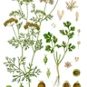
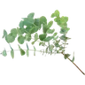

Correspondence Grimoire
Anti-Rheumatic
Type
Oils50

Coriander Seed Essential Oil
Eucalyptus Essential OilAntirheumatic: helps prevent and relieve rheumatism.
Correspondence Grimoire

Coriander Seed Essential Oil
Eucalyptus Essential OilAntirheumatic: helps prevent and relieve rheumatism.